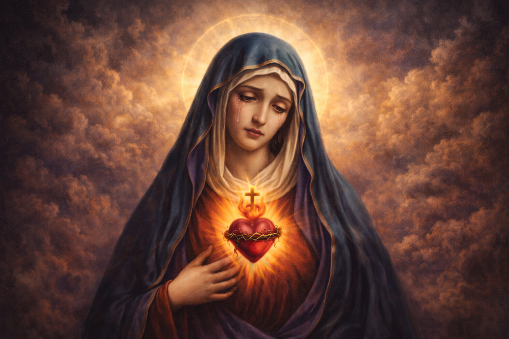

A Devoção às Sete Dores de Maria: Unindo-se ao Sofrimento Redentor
A devoção a Nossa Senhora das Dores é uma das mais antigas e tocantes da Igreja Católica. Ela nos convida a contemplar a Virgem Maria não apenas em sua glória, mas em sua profunda compaixão — o sofrimento compartilhado com seu Filho Jesus para a salvação do mundo. Ao meditarmos sobre as Sete Dores de Maria, aprendemos que o sofrimento, quando vivido com fé e unido à Cruz de Cristo, torna-se um caminho de santificação e redenção.
A Profecia de Simeão: "Uma espada transpassará tua alma"
A base bíblica desta devoção encontra-se no Evangelho de São Lucas (2, 34-35), quando o velho Simeão, ao ver o Menino Jesus no Templo, profetiza que Ele seria um sinal de contradição e que uma espada de dor transpassaria a alma de Maria. Esta "espada" não foi um evento único, mas uma realidade que acompanhou a Virgem desde a infância de Jesus até o Calvário.
"E a ti, uma espada transpassará a tua alma, para que se revelem os pensamentos de muitos corações." (Lucas 2, 35)
Quais são as Sete Dores de Maria?
A tradição da Igreja selecionou sete episódios bíblicos que resumem o martírio espiritual de Maria:
- A Profecia de Simeão: O anúncio de que seu Filho seria perseguido e ela sofreria com Ele.
- A Fuga para o Egito: A dor de ver o Menino Jesus ameaçado de morte por Herodes e ter que viver como refugiada.
- A Perda de Jesus no Templo: Os três dias de angústia buscando o Filho em Jerusalém.
- O Encontro com Jesus no Caminho do Calvário: A dor de ver seu Filho carregando a Cruz, desfigurado e maltratado.
- A Crucifixão e Morte de Jesus: Estar aos pés da Cruz, testemunhando a agonia e o último suspiro de seu Filho.
- A Descida da Cruz (Pietá): Receber em seus braços o corpo sem vida de Jesus.
- O Sepultamento de Jesus: A dor da despedida final e a solidão do Sábado Santo.
As Promessas de Nossa Senhora
Segundo as revelações a Santa Brígida da Suécia, Nossa Senhora prometeu sete graças àqueles que rezarem diariamente sete Ave Marias meditando em suas dores e lágrimas. Entre elas estão a paz nas famílias, a iluminação sobre os mistérios divinos, o consolo nas aflições e a proteção especial na hora da morte.
Por que Meditar nas Dores de Maria?
Meditar nas dores de Maria nos ajuda a humanizar nossa fé. Vemos que a Mãe de Deus não foi poupada do sofrimento, mas o enfrentou com uma confiança absoluta em Deus. Isso nos ensina a:
- Dar Sentido à Dor: Nossos sofrimentos não são inúteis quando os unimos aos de Maria e Jesus.
- Crescer na Empatia: Ao olharmos para a dor de Maria, tornamo-nos mais sensíveis à dor dos nossos irmãos.
- Fortalecer a Esperança: Maria sofreu a Sexta-feira Santa, mas viveu o Domingo da Ressurreição. A dor nunca é a última palavra.
Conclusão: Sob o Manto da Mãe Dolorosa
Nossa Senhora das Dores é a padroeira de todos os que sofrem, dos que choram a perda de entes queridos e dos que se sentem transpassados pelas espadas da vida. Que esta devoção seja para você um porto seguro. Ao segurar a mão de Maria em suas dores, você nunca caminhará sozinho. Ela, que esteve firme aos pés da Cruz (Stabat Mater), estará firme ao seu lado em todas as suas provações.
Nossa Senhora das Dores, rogai por nós que recorremos a Vós!